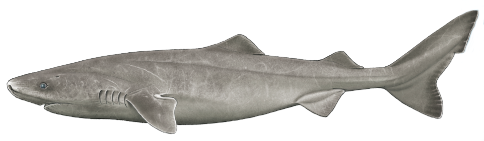

Greenland Shark

The Greenland shark (Somniosus microcephalus), also known as the gurry shark, grey shark, or by the Kalaallisut name eqalussuaq, is a large shark of the family Somniosidae ("sleeper sharks"), closely related to the Pacific and southern sleeper sharks. The distribution of this species is mostly restricted to the waters of the North Atlantic Ocean and Arctic Ocean.
It has the longest known lifespan of all vertebrate species (estimated to be between 300–500 years), and is among the largest extant species of shark. As an adaptation to living at depth, it has a high concentration of trimethylamine N-oxide in its tissues, which causes the meat to be toxic. Greenland shark flesh treated to reduce toxin levels is eaten in Iceland as a delicacy known as kæstur hákarl.
Description
The Greenland shark is one of the largest living species of shark, with dimensions comparable to those of the great white shark. Greenland sharks grow to 6.4 m (21 ft) and 1,000 kg (2,200 lb), and possibly up to 7.3 m (24 ft) and more than 1,400 kg (3,100 lb). Most Greenland sharks observed have been around 2.44–4.8 m (8.0–15.7 ft) long and weigh up to 400 kg (880 lb).
Males are typically smaller than females. It rivals the Pacific sleeper shark (possibly up to 7 m or 23 ft long) as the largest species in the family Somniosidae. The Greenland shark is a thickset species, with a short, rounded snout, small eyes, and very small dorsal and pectoral fins. The gill openings are very small for the species' great size.
Coloration can range from pale creamy-gray to blackish-brown and the body is typically uniform in color, though whitish spots or faint dark streaks are occasionally seen on the back.
Dentition
When feeding on large carcasses, the shark employs a rolling motion of its jaw. The 48-52 teeth of the upper jaw are very thin and pointed, lacking serrations. These upper jaw teeth act as an anchor while the lower jaw proceeds to cut massive chunks out of their prey for a quick and easy kill.
The 48-52 lower teeth are interlocking and are broad and square, containing short, smooth cusps that point outward. Teeth in the two halves of the lower jaw are strongly pitched in opposite directions.
Life History
Diet
The Greenland shark is an apex predator and mostly eats fish. It has never been observed hunting. Recorded fish prey have included smaller sharks, skates, eels, herring, capelin, Arctic char, cod, rosefish, sculpins, lumpfish, wolffish, and flounder.
Greenland sharks have also been found with remains of seals, polar bears, horses, moose, and reindeer (in one case an entire reindeer body) in their stomachs. The Greenland shark is known to be a scavenger, and is attracted by the smell of rotting meat in the water. The sharks have frequently been observed gathering around fishing boats. It also scavenges on seals.
Although such a large shark could easily consume a human swimmer, the frigid waters it typically inhabits make the likelihood of attacks on humans very low, and no cases of predation on people have been verified.
Other Behavior
As an ectotherm living in a just-above-freezing environment, the Greenland shark has the lowest swim speed and tail-beat frequency for its size across all fish species, which most likely correlates with its very slow metabolism and extreme longevity. It swims at a leisurely 1.22 km/h (0.76 mph), with its fastest cruising speed only reaching 2.6 km/h (1.6 mph). Because this top speed is only half that of a typical seal in their diet, biologists are uncertain how the sharks are able to prey on the faster seals. It is hypothesized that they may ambush them while they sleep.
Greenland sharks migrate annually based on depth and temperature rather than distance, although some do travel. During the winter, the sharks congregate in the shallows (up to 80° north) for warmth but migrate separately in summer to the deeps or even farther south. The species has been observed at a depth of 2,200 metres (7,200 ft) by a submersible investigating the wreck of the SS Central America that lies about 160 miles (260 km) east of Cape Hatteras, North Carolina. Daily vertical migration between shallower and deeper waters has also been recorded.
In August 2013, researchers from Florida State University caught the first documented Greenland shark in the Gulf of Mexico at a depth of 1,749 m (5,738 ft), where the water temperature was 4.1 °C (39.4 °F). A more typical depth for the species is above 1,200 m (3,900 ft).
The shark is often colonized by copepod Ommatokoita elongata, which attaches itself to the shark's eyes. It was speculated that the copepod may display bioluminescence and thus attract prey for the shark in a mutualistic relationship, but this hypothesis has not been verified. The shark occupies what tends to be a very deep environment seeking its preferable cold water (−0.6 to 12 °C or 30.9 to 53.6 °F) habitat.
Longetivity

The Greenland shark has the longest known lifespan of all vertebrate species. One Greenland shark was tagged off Greenland in 1936 and recaptured in 1952. Its measurements suggest that Greenland sharks grow at a rate of 0.5–1 cm (0.2–0.4 in) per year. In 2016, a study based on 28 specimens that ranged from 81 to 502 cm (2.7–16.5 ft) in length determined by radiocarbon dating of crystals within the lens of their eyes, that the oldest of the animals that they sampled, which also was the largest, had lived for 392 ± 120 years and was consequently born between 1504 and 1744. The authors further concluded that the species reaches sexual maturity at about 150 years of age.
Reproduction
As recently as 1957, females were found not to deposit eggs in the bottom mud, but retain the developing embryos within their bodies so they are born alive after an undetermined gestation period (a process known as ovoviviparity). About 10 pups per litter are normal, each initially measuring some 38–42 cm (15–17 in) in length.
Physiological Adaptations
Like other elasmobranchii, Greenland sharks have high concentrations of the nitrogenous waste products urea and trimethylamine N-oxide (TMAO) in their tissues, which increases their buoyancy and function as osmoprotectants. TMAO also counteracts the protein-destabilizing tendencies of urea and of deep-water pressure. Its presence in the tissues of both elasmobranch and teleost fish has been found to increase with depth.
The blood of Greenland sharks contains three major types of hemoglobin, made up of two copies of α globin combined with two copies of three very similar β subunits. These three types show very similar oxygenation and carbonylation properties, which are unaffected by urea, an important compound in marine elasmobranch physiology. They display identical electronic absorption and resonance Raman spectra, indicating that their heme-pocket structures are identical or highly similar. The hemoglobins also have a lower affinity for O2 compared to temperate sharks. These characteristics are interpreted as adaptations to living at great water depths.
As Food

The flesh of the Greenland shark is toxic because of the presence of high concentrations of trimethylamine oxide (TMAO). If the meat is eaten without pretreatment, the ingested TMAO is metabolized into trimethylamine, which can produce effects similar to extreme drunkenness. Occasionally, sled dogs that eat the flesh are unable to stand up because of this effect. Similar toxic effects occur with the related Pacific sleeper shark, but not in most other shark species.
The meat can be treated for safe consumption by boiling in several changes of water, drying, or fermenting for several months to produce kæstur hákarl. Traditionally, this is done by burying the meat in boreal ground for 6–8 weeks, which presses the TMAO out of the meat and also results in partial fermentation. The meat is then dug up and hung up in strips to dry for several more months. It is considered a delicacy in Iceland.
Inuit Legends
The Greenland shark's poisonous flesh has a high urea content, which gave rise to the Inuit legend of Skalugsuak, the first Greenland shark. The legend says that an old woman washed her hair in urine and dried it with a cloth. The cloth blew into the ocean to become Skalugsuak. Another legend tells of a girl whose father cut off her fingers while drowning her, with each finger turning into a sea creature, including Skalugsuak.
The Greenland shark plays a role in cosmologies of the Inuit from the Canadian Eastern Arctic and Greenland. Igloolik Inuit believe that the shark lives within the urine pot of Sedna, goddess of the sea, and consequently its flesh has a urine-like smell, and acts as a helping spirit to shamans.